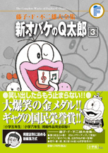

| |

＜小学五年生、小学六年生、
月刊少年ジャンプ掲載集＞
定価：本体1,700円＋税
A5判／616ページ
好評発売中！
※収録内容は変更になる
場合があります。

|
| 恐怖のオンボロカー（小学五年生1971年4月号） |
| よふかし赤ちゃん（小学五年生1971年5月号） |
| 宿題は身代わりで（小学五年生1971年6月号） |
| さぎしとドロンパ（小学五年生1971年7月号） |
Qちゃんをナイトに!?
（小学五年生1971年8月号） |
| なぜか家出をする（小学五年生1971年9月号） |
Qちゃんかご屋になる
（小学五年生1971年10月号） |
| たべろやたべろ（小学五年生1971年11月号） |
| お犬よしのボケ（小学五年生1971年12月号） |
| お年玉をもらおう（小学五年生1972年1月号） |
食べ物のうらみはこわいのだ
（小学五年生1972年2月号） |
スケジュールをおっかけろ
（小学五年生1972年3月号） |
| Qちゃんは名探偵（小学五年生1972年4月号） |
| まけるなQちゃん（小学五年生1972年5月号） |
| オバケ新聞社（小学五年生1972年6月号） |
| 鬼かんとくゴジラ（小学五年生1972年7月号） |
| 犯人はだれだ（小学五年生1972年8月号） |
| やみじるパーティー（小学五年生1972年9月号） |
| 特ダネを作れ（小学五年生1972年10月号） |
| U子を美人に？（小学五年生1972年11月号） |
| 下宿屋をはじめます（小学五年生1972年12月号） |
Qちゃんのレディファースト
（小学五年生1973年1月号） |
| 悪いのはぼくです！（小学五年生1973年2月号） |
| 秘密日記（小学五年生1973年3月号） |
| Qちゃん、また来たの（小学六年生1971年4月号） |
|
| U子なんか大きらい（小学六年生1971年5月号） |
| オバQがじゃまだ（小学六年生1971年6月号） |
| もてもてオバQ（小学六年生1971年7月号） |
| テレビに出たい！（小学六年生1971年8月号） |
| 伊奈子とU子（小学六年生1971年9月号） |
| 男はつらいよ（小学六年生1971年10月号） |
| 大あばれ人魚姫（小学六年生1971年11月号） |
チベットの占いカード
（小学六年生1971年12月号） |
| パーッと使っちゃえ（小学六年生1972年1月号） |
兄としてがんばらなくちゃ
（小学六年生1972年2月号） |
| 失恋対策本部（小学六年生1972年3月号） |
バケラッタヤメラッタ
（小学六年生1972年4月号） |
伸ちゃんと伸ちゃんと伸ちゃん
（小学六年生1972年5月号） |
| 古墳発見（小学六年生1972年6月号） |
| むっつりU子（小学六年生1972年7月号） |
| 兄きのデート（小学六年生1972年8月号） |
| U子さんの節食（小学六年生1972年9月号） |
| 8ミリのロミオ（小学六年生1972年10月号） |
| 居そうろうU子（小学六年生1972年11月号） |
王さまの耳はロバの耳
（小学六年生1972年12月号） |
| バケ寺ベソ子さん（小学六年生1973年1月号） |
| ビリから二番を守る（小学六年生1973年2月号） |
| 9時カエル（小学六年生1973年3月号） |
| O次郎の恋物語（小学六年生1973年6月号） |
| 明日は誕生日（月刊少年ジャンプ1976年5月号） |
|